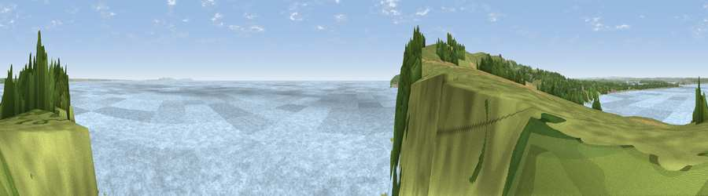

Viewpoint near Studland
#10270 in England · top 29% of its area beats it · near StudlandWhere it is
The exact computed spot (SZ 05125 81975). Click the marker for map links.
The view, rendered

A 360° render of this exact spot computed from the terrain model, tree cover and land cover — summer colours, afternoon light, calibrated against photographs of famous viewpoints. Real trees, hedges and buildings will differ in detail.
The panorama
Grey silhouette: terrain skyline in each direction (720 bearings, Earth curvature and refraction included). Dashed green: skyline with trees (+15 m) and buildings (+8 m) as obstacles. Blue strip: how far the ground is visible on each bearing.
Where the view opens
Wedge length = distance to the farthest visible ground on that bearing (vegetation-aware). Rings at 10, 25 and 50 km.
What fills the view
82% water · 13% grassland · 3% woodland ·
Angular shares of the visible panorama (visual magnitude), not map area. Landscape diversity 0.26 (0–1 Shannon).
Key numbers
More beautiful places nearby
The staircase of upgrades: each row has a higher view potential than everything closer. Driving times are estimates from straight-line distance, calibrated against real road routing — check an actual route before setting out.
| Place | Direction | Drive | Score |
|---|---|---|---|
| Viewpoint near Studland | SW · 1 km | ~3 min | 80.9 |
| Viewpoint near Studland | WSW · 2 km | ~4 min | 82.2 |
| Ballard Down | WSW · 3 km | ~6 min | 83.2 |
| Viewpoint near Harman's Cross | WSW · 4 km | ~10 min | 84.1 |
| Viewpoint near Worth Matravers | WSW · 11 km | ~21 min | 86.0 |
| Viewpoint near Kimmeridge | WSW · 12 km | ~23 min | 87.5 |
| Viewpoint near Chale | E · 44 km | ~65 min | 88.3 |
| Viewpoint near Niton | E · 45 km | ~65 min | 89.2 |
50.63745, -1.92889 · source: screening · position refined by local search. Computed location — check access rights before visiting.